Cohesión social
en tiempos de
desafección política
Juan Carlos Castillo1, Andreas Laffert2, Tomás Urzúa1,
& René Canales2
Centro de Estudios de Conflicto y Cohesión Social - COES
1Universidad de Chile
2Pontificia Universidad Católica de Chile
Tercer Foro de Cohesión Social 2025 (OCS-COES)
XII Conferencia COES, Santiago, 22 de Octubre 2025
Antecedentes
¿Por qué cohesión social?
Concepto polisémico
Fama normativa
Funcionalista
Poco académico
Bisagra
Resistente
Ideal/esperanzador
Poco académico
Experiencias
Ecosocial (2007)
CEPAL
Radar de Cohesión Social (Europa, Bertelsmann Stiftung)
Scanlon Monash Social Cohesion Index (Australia)
Consejo Asesor Para la Cohesión Social (2020)
Medición de Cohesión Social en CASEN (pobreza multidimensional)
Castillo, J., Olivos, F., y Iturra, J. (2021). Conceptos y Medición de Cohesión Social En Proyectos Internacionales. Serie Documentos de Trabajo COES, Documento de Trabajo N47, Pp. 1-32.
Una definición
“La cohesión social es un estado de cosas relativo tanto a las interacciones verticales como horizontales entre los miembros de la sociedad, caracterizado por un conjunto de actitudes y normas que incluye la confianza, el sentido de pertenencia y la disposición a participar y ayudar, así como sus manifestaciones conductuales” (Chan et al., 2006, p. 290)
Chan, J., To, H.-P., & Chan, E. (2006). Reconsidering Social Cohesion: Developing a Definition and Analytical Framework for Empirical Research. Social Indicators Research, 75(2), 273-302. https://doi.org/10.1007/s11205-005-2118-1
Cohesión social (Chan et al., 2006)
Definición minimalista y relacional: corresponde a un estado de las relaciones sociales que vinculan a los individuos entre sí y con las instituciones
Hace referencia a un colectivo
La cohesión como un estado de las relaciones sociales, no como sus causas (ej. igualdad) o consecuencias (ej. estabilidad)
Cohesión horizontal y vertical
Cohesión Horizontal
- Confianza interpersonal
- Pertenencia territorial
- Redes sociales
Cohesión Vertical
- Confianza institucional
- Participación cívica
- Justicia distributiva
(otra) Propuesta
Estándares

¿Por qué una nueva propuesta?
ELSOC: Estudio Longitudinal Social de Chile (2016-2023, 7 olas)
Oportunidad de medir por primera vez cambios en indicadores de cohesión social en Chile con datos panel
Necesidad de contar con información robusta en un tema donde hasta ahora sabemos poco
Cobertura en ELSOC
Horizontal
Vínculos entre ciudadanos:
- seguridad
- territorio
- redes
Vertical
Vínculos institucionales:
- confianza
- participación
- justicia
Para citar:
Urzúa, T., Canales, R., Laffert, A. & Castillo, JC (2025) Documento metodológico: Medición de Cohesión Social en Chile con ELSOC. Observatorio de Cohesión Social OCS, doi.org/10.5281/zenodo.17408345.
Visualizador Longitudinal de Cohesión Social en Chile
¿Qué es el VisELSOC?
Una herramienta interactiva construida a partir de los datos del Estudio Longitudinal Social de Chile (ELSOC-COES)
Individuos que participaron en al menos 3 olas del estudio entre 2016 y 2023
De libre acceso
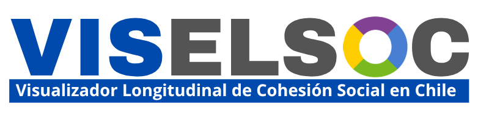
Funcionalidades de VISELSOC
1. Visualización Longitudinal
- Compara promedios de dimensiones a través del tiempo (gráficos de líneas)
2. Visualización Ranking
- Muestra cambios temporales en los indicadores específicos de cada subdimensión
3. Visualización Bivariada
- Cruza subdimensiones de cohesión con variables sociodemográficas
Característicoas VISELSOC
Todos los indicadores, subdimensiones y dimensiones fueron construidos a partir de porcentajes de respuestas a categorías alta y muy alta.
Los gráficos del visualizador se pueden descargar y utilizar libremente.
Para citar:
Urzúa, T., Iturra, J., Canales, R., Laffert, A. & Castillo, J. (2025). Visualizador Longitudinal de Cohesión Social de Chile 2016-2023. Observatorio de Cohesión Social OCS, https://doi.org/10.5281/zenodo.17408345.
Análisis longitudinal VISELSOC
Subdimensiones a analizar
Confianza en instituciones políticas:
- Considera el grado de confianza que tienen los sujetos hacia las instituciones de orden político de la sociedad, tales como el Gobierno, el Congreso y los partidos políticos.
Preferencias autoritarias
- El grado de acuerdo respecto a ideales autoritarios, como la preferencia por gobiernos firmes, mandatarios fuertes y la obediencia como valor clave (re-escalada: valores altos indican mayor desacuerdo con posiciones autoritarias (mayor preferencia por normas democráticas).
Confianza interpersonal
- El nivel de confianza hacia otras personas y el acuerdo en que los demás actúan de manera altruista (re-escalada: valores altos indican mayor confianza interpersonal).
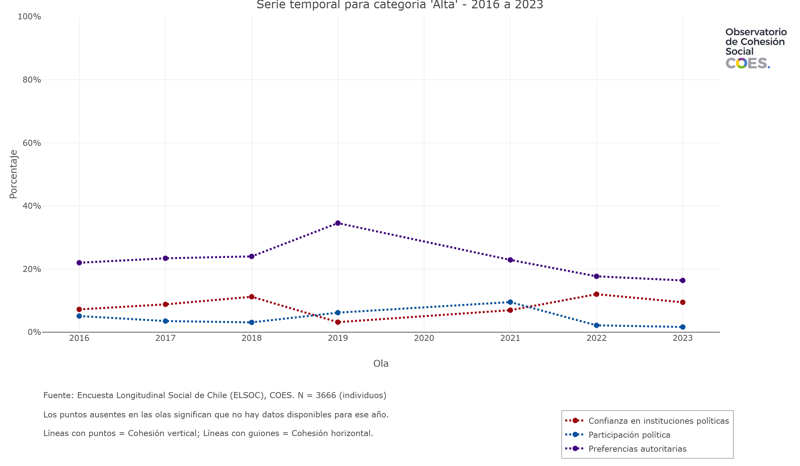
Confianza en Instituciones Políticas por Edad
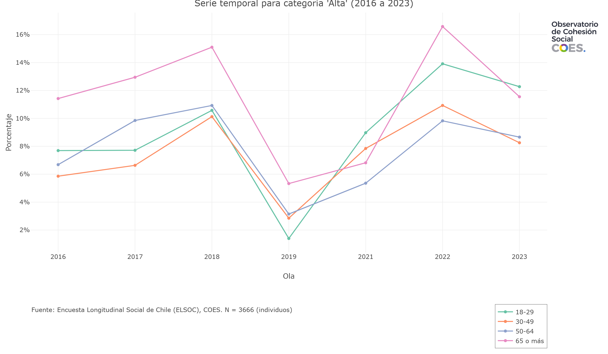
Confianza en Instituciones Políticas por Educación
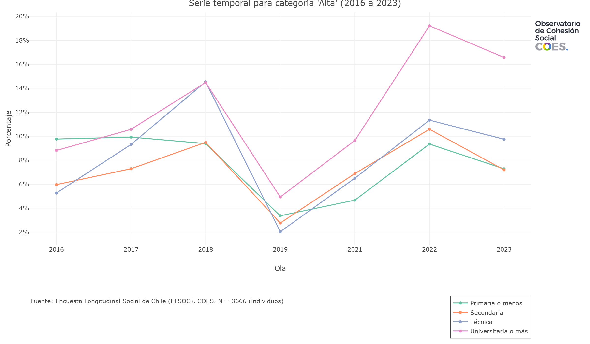
Confianza en Instituciones Políticas por Ideología
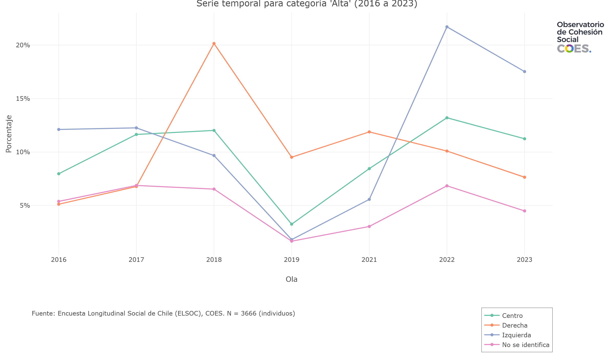
Confianza en Instituciones Políticas por Ingreso
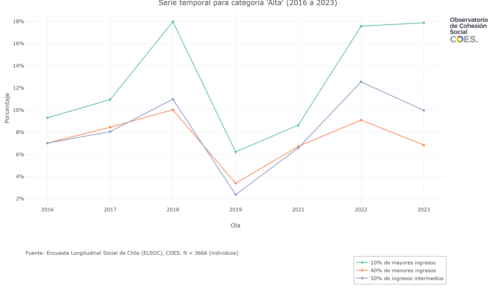
Preferencias Autoritarias por Edad
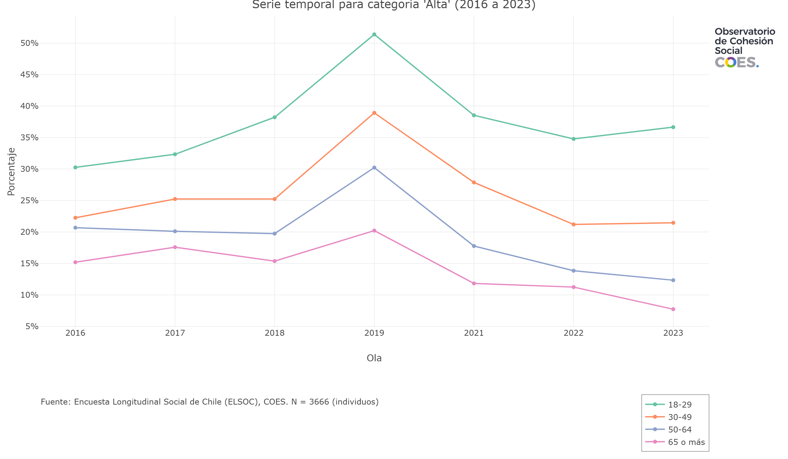
Preferencias Autoritarias por Educación
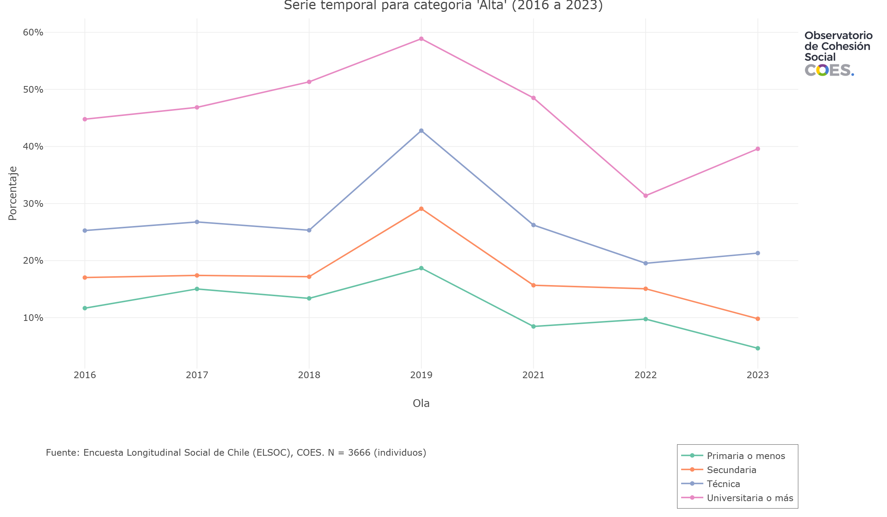
Preferencias Autoritarias por Ideología
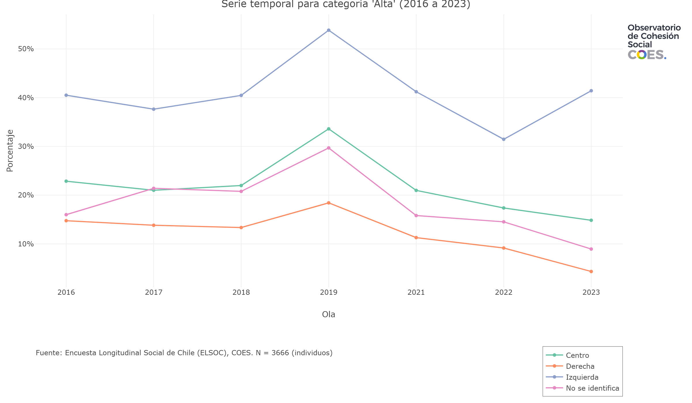
Preferencias Autoritarias por Ingreso
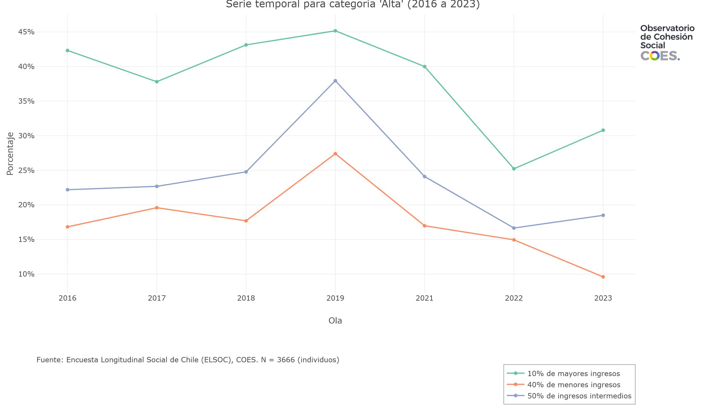
Confianza Interpersonal por Edad
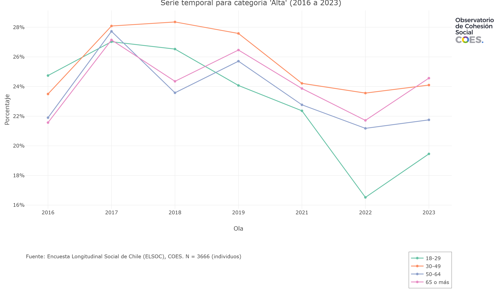
Confianza Interpersonal por Educación
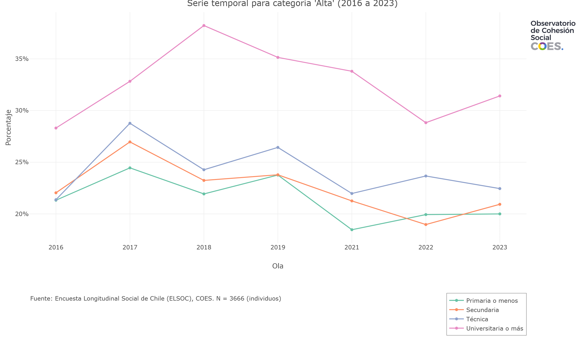
Confianza Interpersonal por Ideología
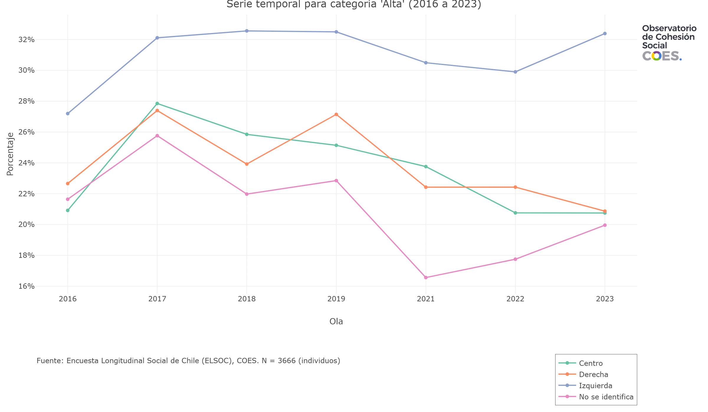
Confianza Interpersonal por Ingreso
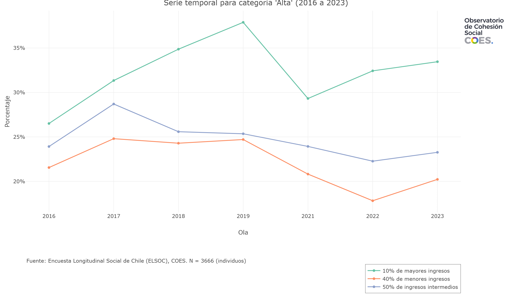
Conclusiones
Cohesión como concepto resiliente
Conceptualización multidimensional minimalista
ELSOC como oportunidad de generar indicadores de cambio en cohesión social en Chile
Edad, educación e ideología se relacionan con cambios en indicadores de cohesión social
Orientación para políticas de cohesión social
Posibilidades: variables territoriales, modelamiento longitudinal, asociación entre dimensiones
Equipo OCS 2025
Gracias por su atención!
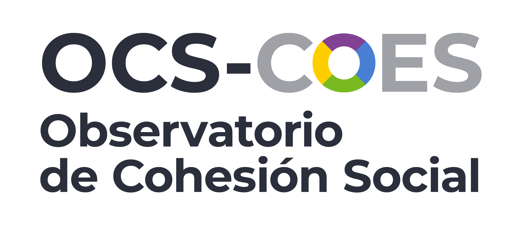